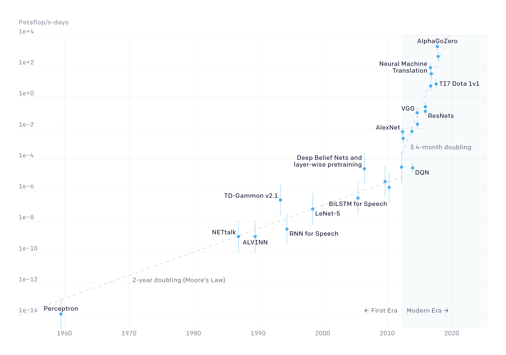
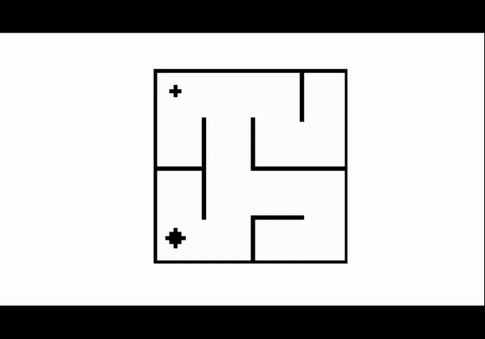
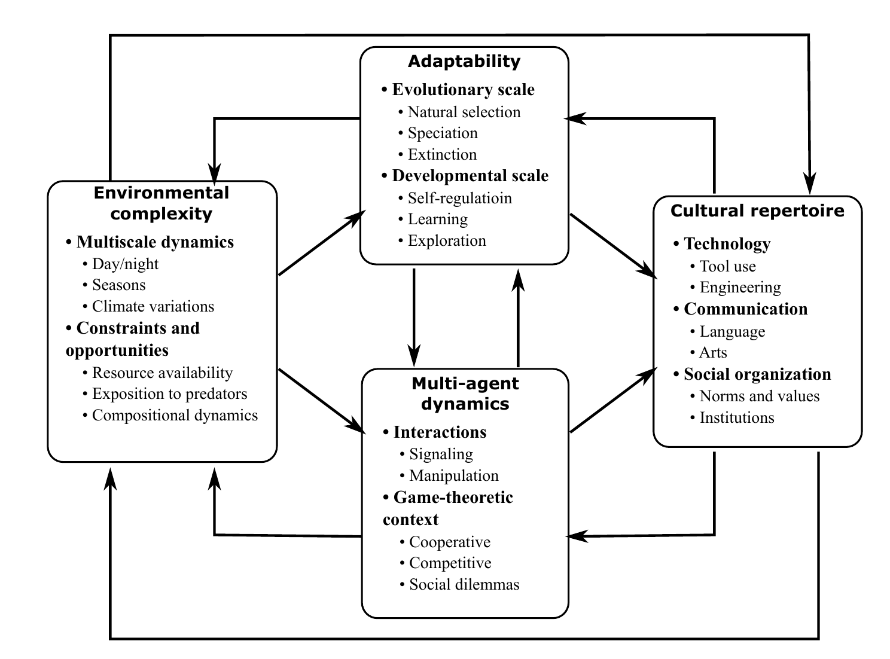
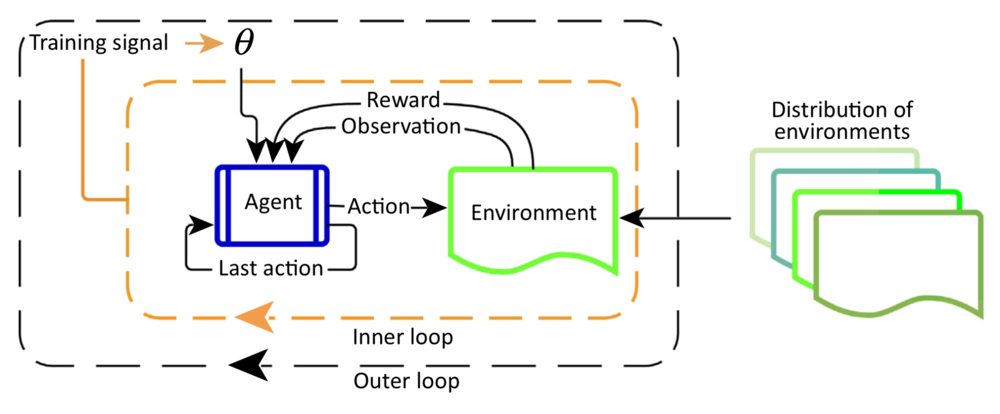
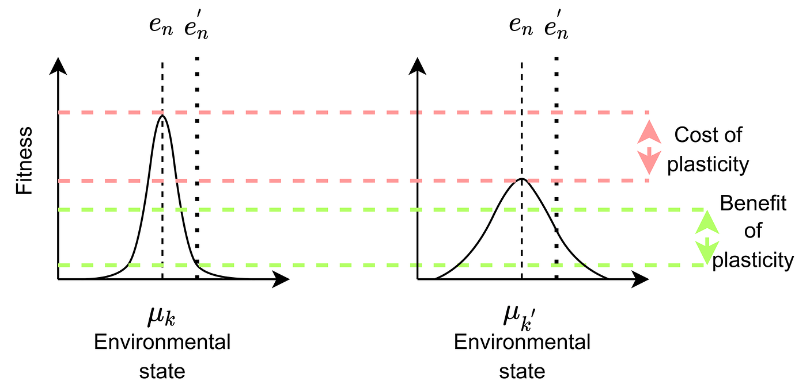
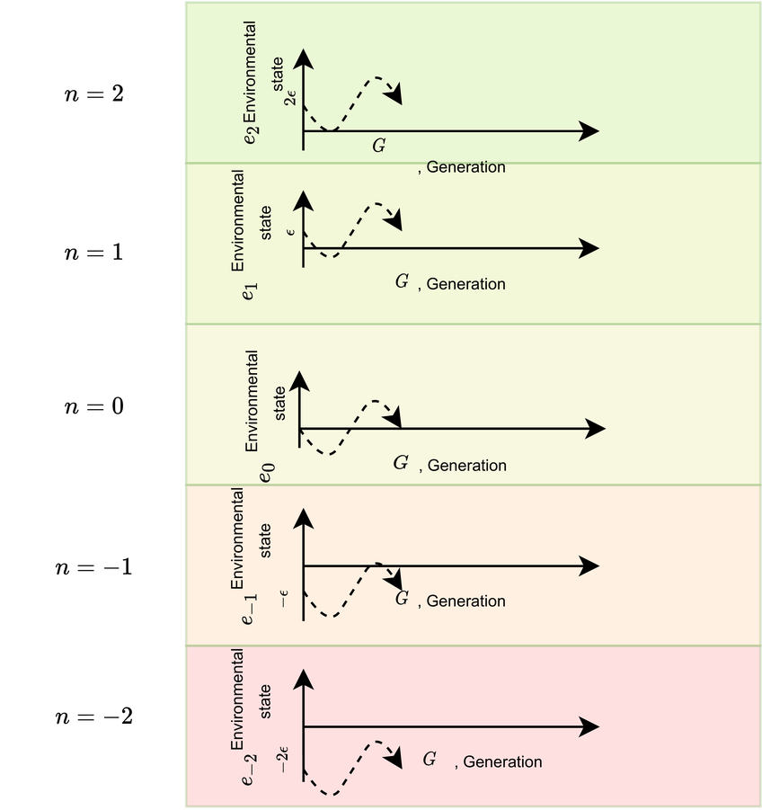
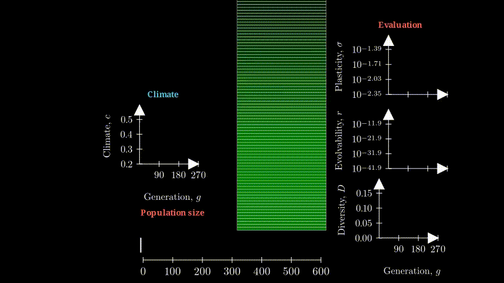

'Can machines think?' When Turing posed this question in his seminal paper
Computing machinery and intelligence
We call this the cognition-centric approach and want to contrast it to the ecological approach. Under this alternative attitude towards creating AI, intelligence is viewed as an emergent product of adaptive systems interacting with their environments. While cognition-centric approaches attempt to reverse-engineer intelligent behavior by searching in the space of cognitive functions, ecological approaches search in the space of environmental properties to reverse-engineer the conditions that drive intelligent behavior.
Ecological perspectives abide in the study of biological organisms. From the emergence of vision systems (Gibson et al) to that of religious beliefs Botero et al , the environments encountered in a species' evolutionary trajectory have been used to explain why certain functions persist over others.
 |
|
How does environmental variability affect the evolution of adaptability?In a world with temporal and spatial variability, a population of agents evolves its adaptability in order to survive. Agents can adapt using evolvability and phenotypic plasticity and the fittest ones in a niche leave offspring. Can these agents survive in the face of extreme climatic variability? In this work, we will see how populations adapt, diversify and disperse under different climatic conditions. |
How does social connectivity affect collective innovation?From drug discovery to music composition, our human cultural repertoire relies on innovations produced by collectives that jointly explore, communicate and recombine solutions. Can artificial agents also innovate in collectives? In the learning paradigm of distributed RL, groups of agents solve tasks in parallel and share their experiences with observed benefits to performance. But, while biological organisms exhibit a variety of social network structures,, distributed RL agents always share with everyone. Here, we study the effect of social network structure in a group of DQN agents playing the Little Alchemy game . |
At a first glance these two studies have nothing in common, except perhaps for their ecological attitude towards skill acquisition. At the end of this post we will see, however, that there is room for exchanging ideas between the two: recent ecological theories posit that elements in our environment such as the Sahara desert act as ecological barriers that prohibit immigration but can disappear during periods of extreme climatic variability ( did you know the Sahara was green a few tens of thousands of years ago? (Larrasoana et al) . This means that climatic variability may have affected social network structure, with interesting implications for the populations that needed to survive at the time ...
What is the first thing that comes to mind when you hear the word "open-endedness"? For many scientists, engineers and artists, it is "life" or "evolution", words that conjure images of biological agents with a wide diversity of forms and functions, entangled in a complex web of interactions. What makes biological open-endedness particularly mind-boggling is not just the diversity and complexity of solutions, but the apparent simplicity of the algorithm that continuously gives rise to them: evolution.
AI researchers were also inspired from the open-endedness of biological evolution and attempted to imitate it by building artificial agents with large behavioral repertoires. Largely owing to achievements in deep learning, optimization using reinforcement learning and evolutionary algorithms managed to produce agents with impressive behavioral repertoires: populations of RL agents co-adapting with their environments managed to develop morphologies that can walk on challenging terrains (Wang et al) , a single RL agent trained using techniques developed for language models managed to play Atari games, chat and control a robotic arm (Reed et al) [](), a team of RL agents playing Hide-and-Seek learned how to manipulate items in their environment to continuously pose new challenges to another team (Baker et al) and evolutionary algorithms that optimize for both diversity and quality managed to solve deceptive maze-navigation tasks (Pugh et al) . Today, open-ended skill acquisition is considered an important pursuit in AI for driving the field forward (Stanley et al, 2017) (Clune, 2020)

The computational needs of machine learning models are constantly increasing (Image credit: source )
Brittleness of RL agents: an agent learned a powerful strategy but completely failed when the problem changed slightly (Image credit: modified from source )

In deceptive tasks optimizing for the objective is not optimal: here the trajectory that minimizes distance to the target (red arrow) will get the agent trapped. (Image credit: modified from source
However, progress in this direction is being hindered by :
We believe that these challenges are due to remnants of the cognition-centric approach and that an ecological approach can help us overcome them
We recently proposed that a possible pathway to overcome these challenges is by grounding our pursuit of open-ended skill acquisition in artificial systems in our knowledge of a natural species with an impressively open-ended behavioral repertoire: our own.
Our methodology was three-step:
Here is our conceptual framework, to which we refer to as ORIGINS , that our work led to:

The schematic consists of two elements:
To discover works that study these links, including our own, you can hover over the arrows in the image.
The story that the conceptual framework tells, put succinctly, is:
Environmental complexity has a key role in skill acquisition: it bootstraps the emergence of individual skills by modulating the need for cognitive mechanisms and multi-agent skills through cooperation and competition pressures. The skills themselves then act as drivers of further skill acquisition in two ways: a) they interact with each other to give rise to the uniquely complex human cultural repertoire b) they modulate environmental complexity through the process of niche construction, which creates a positive feedback loop that makes the process open-ended.
ORIGINS can be a useful tool for both communites: AI researchers can borrow existing hypotheses from HBE about which environmental conditions affect which skills to appropriately shape their environments, an approach that we refer to as ecologicall-inspired AI. At the same time, HBE researchers can use AI as a computational tool for studying their hypotheses.
In the rest of the post we give a more illustrative example of ecologically-inspired AI through two of our works: we will zoom in in two different parts of the framework, discuss the ecological hypotheses they were inspired from, and then present the artificial ecologies we implemented to study them.
What makes us human? For HBE researchers, this is not a philosophical inquiry, but a rather pressing scientific question: why did the first hominin species appear about 5 million years ago and which skills did they evolve that allowed them to expand into a population that today holds a powerful position in the Earth's ecosystem?
When we trace back the history of our planet, we find climatic records of very ''busy" periods : many rapid and
large-amplitude climatic cycles have taken place in the last few milliion years, leading to high levels of climate
change that must have significantly shaped populations at a global and local scale. Our own hominin space appeared
and dispersed during such periods, competing and reproducing with other species.

Paleoclimatology records indicate that periods of high climatic variability were linked to the formation of lakes and the appearance of new hominin species. Image source
How exactly did climatic conditions affect the evolution of the human species? The Pulsed Climate Variability
(PCV) framework
Under the PCV framework species are divided into two broad types: specialists are species that can survive in a limited range of environmental conditions, while generalists survive in a large range of conditions. As humans are a remarkably generalist species, we are very interested in which ecological conditions give rise to this type. With incomplete data about the environmental conditions and species of this period and, in the absence of theoretical models, answering this question in HBE in the near future seems unlikely.
A similar story has been unfolding in AI: in its quest for artificial agents that can generalize and quickly
adapt to new tasks, the meta RL paradigm trains agents in a wide distribution of environments
Here, the agent adapts at two levels:
To draw a parallel with biological agents, we can see the outer-loop implementing the adaptive mechanism of evolution and the inner loop the adaptive mechanism of development.

The main limitation here is computational complexity: the distribution of environments needs to be sampled densely enough to ensure generalization while the set of environments considered is limited within a single domain (for example mazes with different layouts). Also meta-learning set-ups usually consider a stationary distribution for sampling environments, thus ignoring the benefits of environments with certain dynamics, such as the ones proposed by the PCV framework
Recently we proposed a simple model for studying how populations of adaptive agents evolve in variable
environments
An important challenge in this project was to design an experimental setup that is powerful enough to capture the ecological dynamics and the evolution of diverse phenotypes but still computationally cheap so that we can simulate a wide range of conditions and large populations.
In AI, quantifying plasticity requires to simulate the interaction between an agent and the environment over many
timesteps (as e.g. in RL). To avoid this complexity of introducing an intra-lifetime loop for evaluation tasks, we
have adopted tolerance curves, a tool originally developed in ecology to model biological organisms
Tolerance curves have the form of a Gaussian whose mean shows the preferred environmental state of an individual and variance its plasticity, i.e., its ability to survive under different environmental conditions:

Tolerance curves elegantly capture the cost and benefit of plasticity: if a plastic and non-plastic agent compete in an environment that is identical to their preferred niche, the plastic one will lose as its peak is lower. But if, for some reason, the environment changes in the next generation so that it differs from the preferred niche of the two individuals, the plastic one will be at an advantage.
In addition to this plasticity, an agent can adapt using its evolvability (r;), which refers to the amount of mutations that take place between generations.
To decide which agents in a population survive in the following generation we implemented two selection mechanisms:
At each generation, the three elements of an agent's genome evolve as:
μ {t+1} = μ {t} + N(0, r{t}) σ {t+1} = σ {t} + N(0, r{t}) r; {t+1} = r; {t} + N(0, r{t})We have hinted that we want to simulate a variable environment, but how exactly can we go about this, while keeping the computational complexity of the simulations low? In this work, we have defined a model that comprises a number of niches &N and a climate function e_g that characterizes the environmental state of each niche.

To disentangle the effect of the two selection mechanisms we experimented with three variants of the evolutionary algorithm:
Stable environment
Sinusoid environment
Noisy environment
We have also simulated words with various number of niches and three types of climate functions:
We observed that the three algorithms lead to very different behavior. For example, for sinusoidal variation under F-selection the plasticity and the evolvabiltiy of the population is low and variability is dealt with by continous migration as the following visualization shows on the left. In contrast when we employ NF-selection in the same environmental setup both plasticity and evolvability remain high and the population expands to all niches (on the right).
 |
 |
In these experiments, agents can freely moves in niches, as long as they can survive in them. If they have high
plasticity, the population therefore necessarily becomes well-mixed. This contrasts with real ecological
dynamics, where ecological barriers can appear and disappear. For example, under the Green Sahara ... and the
Iberian ..., . Such conditions are hypothesizes to have an important effect on both biological and cultural
evolution
When we talk about human culture, things like art, science and language, we often tend to emphasize the contributions of certain innovative individuals. This "lonely genius" narrative obscures the true, collective nature of human culture: from hunter-gatherers tens of thousands of years ago to today's research networks, humans innovate in groups. They observe innovations in their past and their social environment and recombine them to form new innovations that in their turn become part of their group's cultural repertoire.
 |
 |
|
Years ago |
Research networks . |
The two groups on the left and right of this figure are very different: they regard very different individual at different temporal and spatial scales. Yet when we glance at them, they seem to share a very similar social network structure